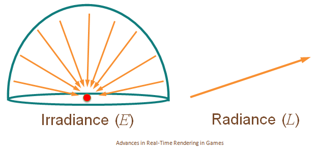
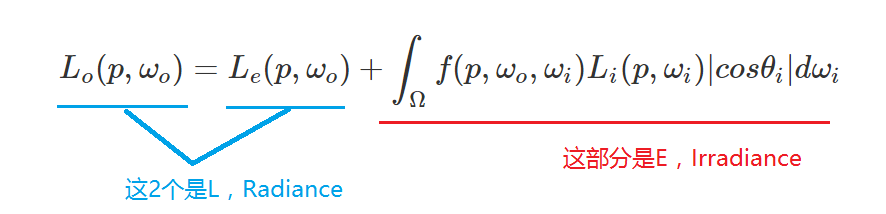

渲染基础理论的介绍
Tags: math, computer graphics
基础概念
辐射度学 Radiometry
辐射度学是指测量电磁辐射(包括可见光)的一系列技术，它是和观察者无关的。而近似的光度学(photometric)，是观察者相关的。这里我所说的观察者无关，是指测量值和人眼并无关系，是绝对值。
基于辐射度学来做渲染，需要了解下面这些东西：
- 光谱 Spectrum
- 光谱功率分布(SPD, spectral power distribution)
- XYZ 和 RGB 两种CIE颜色系统以及它们之间、它们和SPD之间的转换
- 辐射通量(Flux)
- 立体角(Solid Angle)
- 辐射密度(Irradiance)
- 辐射亮度(Radiance)
光谱 Spectrum
现实中大部分光源（非直接光源也算），发射出的光都是复合光，即是由不同波长的色光混合而成的。 光谱就是指所有光波的分布。光谱图如下：

其中波长在 390 nm 到700 nm之间的光波称为可见光。
光谱功率分布spectral power distribution
光谱功率分布描述的是这样一件事情：对于一个直接或间接光源物体，它发射出的复合光中各个波长的色光分别有多少能量，或者说，这个光源的能量是如何分布到各个波长的光波的？
譬如，水银灯的光主成分是波长为404.7, 407.8, 435.8, 546.1, 577.0, 579.0纳米的光波（见下图）。这意味着能量分布非常不平衡，主要集中在这几个波长上了，相当于离散了。
上图就是水银灯的SPD曲线了。
而白炽灯的SPD曲线是这样子的：

注意上面两个图中，横轴是指波长，纵轴是指每单位纳米(10纳米一个单位)的波长的功率（能量）。
SPD曲线都是用Spectroradiometers 这种专门仪器测量的。
SPD一般用符号P(λ)表示。
XYZ 三色刺激值(tristimulus vlaues)
(CIE标准观察者颜色匹配函数)(The CIE standard observer color matching functions)
当看到CIE standard observer字眼时，其实指的就是上面这个图。这个图是通过测量获得的，好处是这个图相当于一个数据表，当需要把SPD曲线转换成XYZ三刺激值时，就可以用这个图做，坏处是它不是数学描述出来的，那么应用起来就有一定限制性。
那么SPD如何转换到XYZ呢？公式如下：

这里面用到了积分，但因为匹配函数是非数学描述的（上面的图的3条曲线），所以这个公式不可用，然而我们可以另辟蹊径，用采样和线性叠加的方法计算XYZ：

这里的下标i代表第几个刻度的采样。采样间隔(spacing)一般是1到20纳米，采样空间(span)是整个可见光波段（这个波段的具体范围取决于实际需求和SPD曲线）。
通过SPD计算XYZ：Computing XYZ From Spectral Data
XYZ和RGB之间的互相转换
公式是：

看公式可以知道，XYZ和RGB之间可以线性转换得到，这就很实用了。
另外，此图的转换矩阵M是测量获得的，不用去纠结是怎么来的。
关于各种CIE颜色表示之间的转换，请访问：
辐射通量(Flux)
辐射通量(Radiant Flux)，指的是单位时间到达一块平面(或一个局部空间区域)的能量总和。单位是焦耳每秒(joules/second,，J/s)，或瓦特(watts，W)。符号是\(\Phi \)。
一个点光源发射出去的能量大小可以用Flux来描述。其中要注意的是，Flux描述的是单位时间的能量，那么对于点光源来说，Flux只和光源的强弱有关，所以下图的2个圆圈的Flux值是一样的。

辐射密度(Irradiance) (或称辐射照度(Radiant Exitence))
辐射密度也叫辐射照度。定义了辐射通量后，就可以定义辐射照度了，辐射照度指的是单位面积进入的辐射通量，单位是\(W/m^{2}\)。根据这个定义用符号E表示。
辐射照度和辐射密度是近似的东西，辐射照度指的是单位面积离开的辐射通量，单位也是\(W/m^{2}\)。用符号M表示。
以上面的点光源来分析，可以知道上图中内圆圈的辐射照度比外圆圈的辐射照度大，这是因为内圆圈的面积更小而点光源的Flux值恒定，所以内圆圈的E值就大。
用公式表示：
\[ E = \frac { 点光源辐射通量 }{ 球的表面积 } = \frac {\Phi}{4\pi r^{2} } \]
可见，W恒定，半径r越小，那么辐射照度E越大。
当假设光源在无限远处时，可把光源认为是一块平面（这种光源叫方向光）。此时，光源平面与被照射平面存在2种情形：光源平面与被照射平面平行（下图中的A）、光源平面与被照射平面不平行（下图中的B）：

(图中的平面附近的A指的是面积Area)
当光源平面与被照射平面平行时，有：
\[ E_{1} = \frac {\Phi}{ A } \]
当光源平面与被照射平面不平行时，需要根据平面的法向量和光线方向的夹角θ，先求出\( A^{'} \)：
\[ cos\theta = \frac { A }{ A^{'} } \]
\[ A^{'}= \frac { A }{ cos\theta } \]
于是得到：
\[ E_{2} = \frac {\Phi}{ A^{'} } = \frac {\Phi}{ \frac { A }{ cos\theta } } = \frac { \Phi cos\theta }{ A } \]
也可以记为
\[ E = \frac { \Phi cos\theta }{ A^{\perp } } \]
( \( A^{\perp } \) 指A'在光线的方向的正交平面上的投影)
微分形式：
\[ dE = \frac { d\Phi cos\theta }{ dA^{\perp } } \]
根据这个式子，可以想到，当θ逼近0度时，cosθ等于1，法向量和光线方向平行（上图中的A）；当θ逼近90度时，cosθ等于0，辐射照度E为0（光线垂直于法向量了）。
立体角(Solid Angle)
立体角的介绍请访问：立体角(Solid Angle)详解
辐射亮度(Radiance)
辐射亮度是指辐射通量与单位面积(注意，是与光线方向正交的那块)单位立体角的比值。符号为L。定义式如下：
\[ L = \frac { d\Phi }{ d\omega dA^{\perp } } = \frac { d\Phi }{ d\omega dA cos\theta } \]
或：
\[ L = \frac { \Phi }{ \omega A^{\perp } } \]
物理含义如下图所示：

辐射密度E和辐射亮度L的关系是"总体"和"个体"的区别，可以对比下两者的公式来理解：
\[ E = \frac { \Phi }{ A } \]
\[ L = \frac { \Phi }{ \omega A^{\perp } } \]
E是指进入目标区域的总辐射通量与目标区域总面积的比值；而L是指进入目标区域的总辐射通量与目标区域总面积、总的入射立体角的比值，也就是说L是比E多除了立体角。直观图示如下：

也就是说其实E和L可以认为是同一个东西，只是L描述的是E的局部。用一句话记住两者的区别：有特定方向时是L，无特定方向时是E。这个区别相当重要，因为它体现在了渲染方程中。
注意：在计算机图形学中，辐射亮度比起上面其他物理量，都重要地得多。
如果要求平面上某点p的某方向\(\omega \)的辐射亮度L(Radiance)，可用下面的符号表示：
\[ L(p,\omega ) \]
其中，\(\omega \)的方向需要注意，因为它是一个立体角，立体角的圆心是p，\(\omega \)的朝向必然是从圆心p往外（向量起点是p）。
实际上，需要区分成入射(input)和出射(output)2种辐射亮度L，用下面2个符号表示：
\[ L_{i}(p,\omega ) \]
\[ L_{o}(p,\omega ) \]
且在现实世界中有：
\[ L_{i}(p,\omega ) \neq L_{o}(p,\omega ) \]
还有，上面的这个p不能简单认为真的是一个无体积的点，它也可能是一个无限小的平面块，即它是一个有面积A、有法向量n的“点”。对于这样一个“点”，我们可以求出它的上半球(沿着n的方向)的辐射密度值\( E(p, n) \)：
\[ E(p, n) = \int _{\Omega } L_{i} (p,\omega ) |cos\theta |d\omega \]
分析下这个式子的由来。首先搬出上文给出的L和E的公式：
\[ L = \frac { d\Phi }{ d\omega dA^{\perp } } \]
\[ dE = \frac { d\Phi cos\theta }{ dA^{\perp } } \]
所以有：
\[ d\Phi = L d\omega dA^{\perp } \]
\[
dE = \frac { d\Phi cos\theta }{ dA^{\perp } }
= \frac { L d\omega dA^{\perp } cos\theta }{ dA^{\perp } }
= L d\omega cos\theta \]
对上式做整个半球的积分，就得到了：
\[ E = \int _{\Omega }L|cos\theta |d\omega \]
也就是：
\[ E(p, n) = \int _{\Omega } L_{i} (p,\omega ) |cos\theta |d\omega \]
其中的\( cos\theta \)加绝对值是因为我们求的是半球的积分，立体角\(\omega \)和法向量的夹角必然是锐角，锐角的余弦值必然大于等于0。
如果把式子中的\(d\omega \)替换成球形角(Sphere Angle)，则得到：
\[ d\omega = sin\theta d\theta d\phi \]
\[ E(p, n) = \int _{\Omega } L_{i} (p,\omega ) |cos\theta |sin\theta d\theta d\phi \]
这个式子是不对的，因为积分那里用了立体角，需要将其转换成对\(\theta 和 \phi \)的积分。因为这里积分的是半球，那么\(\theta \)的取值范围是\( [0,\frac {π}{2}] \)、\(\phi \)的取值范围是\( [0,2π] \)：
\[ E(p, n) = \int _{0 }^{ 2π } \int _{0 }^{ \frac {π}{2} } L_{i} (p,\theta ,\phi ) cos\theta sin\theta d\theta d\phi \]
（因为已经明确限定了\(\theta \)的取值范围，所以\( cos\theta \)必然大于等于0，可去掉绝对值符号）
如果\(L_{i} (p,\theta ,\phi ) \)是一个常量值，那么就意味着任意方向的Radiance都是相等的，于是上式可以求出积分：
\[ E(p, n) = L_{i} (p,\theta ,\phi ) \int _{0 }^{ 2π } \int _{0 }^{ \frac {π}{2} } cos\theta sin\theta d\theta d\phi \]
\[ = L_{i} (p,\theta ,\phi ) \int _{0 }^{ 2π } (\frac {1}{2}sin^{2}\theta )\rvert ^{\frac {π}{2}}_{0} d\phi \]
\[ = L_{i} (p,\theta ,\phi ) \int _{0 }^{ 2π } (\frac {1}{2}sin^{2}\frac {π}{2} - \frac {1}{2}sin^{2}0 ) d\phi \]
\[ = L_{i} (p,\theta ,\phi ) \int _{0 }^{ 2π } \frac {1}{2} d\phi \]
\[ = L_{i} (p,\theta ,\phi ) \frac {1}{2}( 2π - 0) \]
\[ = L_{i} (p,\theta ,\phi ) π \]
渲染方程 Rendering Equation
把wiki的渲染方程贴进来：

https://en.wikipedia.org/wiki/Rendering_equation
各个组成元素的解释：
λ 指代波长为λ的光
t 某一时间点
x 指空间上的某个点，也即被渲染的点(微分平面) (其实应该写成p吧)
n 被渲染的点(平面)的法向量，可以人为指定也可以根据一定规则自动生成
\( \omega _{o} \) 出射光线的方向（是一个立体角)，起点在x(被渲染的点)
\( \omega _{i} \) 入射光线的反方向（是一个立体角)，起点也在x，所以才叫反方向
\( L_{o}(x, \omega _{o}, λ, t) \) 在t时刻、从x点往\( \omega _{o} \)方向的光(λ)的总辐射亮度(Radiance)
\( L_{e}(x, \omega _{o}, λ, t) \) 指x点自身发射出的辐射亮度(Radiance)，其他参数含义同\( L_{o}(x, \omega _{o}, λ, t) \)
\(\Omega \)是以x为圆心的单位半球，半球的朝向和法向量n一致
\(\int _{ \Omega } \cdots d\omega _{i} \) 指对这个半球做积分
\(f_{r}(x, \omega _{i}, \omega _{o}, λ, t) \) BRDF函数，函数的返回值是一个比值(ratio scalar)
\( L_{i}(x, \omega _{i}, λ, t) \) 在t时刻、沿着\( \omega _{i} \)方向进入x点的光(λ)的辐射亮度(Radiance)
\(\omega _{i} \cdot n \) 是一个衰减比值(一般是0到1)，指入射光的方向和法向量的夹角\( \theta _{i} \)，这个夹角导致产生的衰减。原因请参考上面的辐射通量小节。这个参数也可以写成\( \cos \theta _{i} \)
上面的可能太教科书了，下面展示一个简化的渲染方程：
\[ L_{o}(p, \omega _{o}) = L_{e}(p, \omega _{o}) + \int _{\Omega }f(p, \omega _{o}, \omega _{i}) L_{i}(p, \omega _{i}) |cos \theta _{i}|d\omega _{i} \]
能简化成这个式子的原因是，在做渲染器的时候，本来就是把t值固定的，即做动画渲染的话，也是把动画离散成一帧帧来渲染，对每一帧来说t值是常量值；而另外的λ值蕴含在颜色空间(XYZ RGB)中。
还有一个要说清楚的，就是这个方程3个部分的含义：

为什么右边那坨是E？上文已经说过了:"有特定方向时是L，无特定方向时是E",因为它是对L做整个半球的积分（注意，积分的是入射角度），也就是无特定方向，所以它是E。而另外2个分部都是指定了朝向了\(\omega _{o} \)（出射方向）的，所以是L。
整个渲染方程可以说就是在求出射方向到底有多少辐射通量（为什么不是L？因为被渲染区域的面积一般都限定为单位面积，即等于1，所以L相当于\(\Phi \) )，辐射通量一旦确定就可以知道这个被渲染区域的颜色。
到了这里，其实就可以总结一下了：渲染的目标就是得到一幅图上的每个像素点的辐射亮度值(L)，L值相当于RGB值。基于光线追踪的离线渲染中，是可以直接基于上面的渲染方程去做工程实现的。相比而言，实时渲染更多的是用各种trick技术来近似渲染方程。